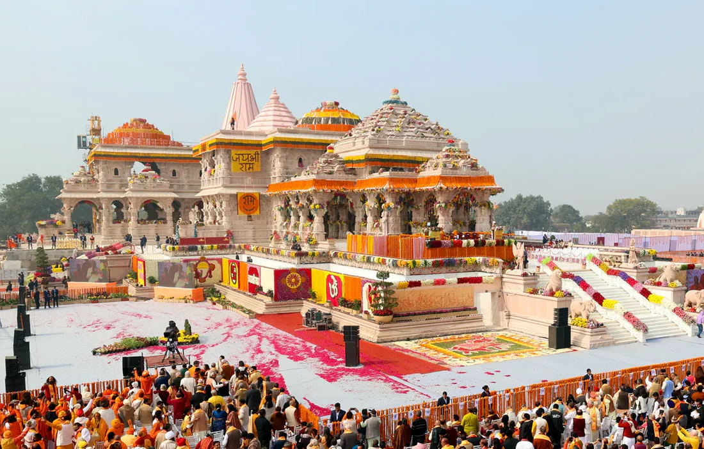

Exploring Culture, History, and Sacred Landscapes
Published on: October 19, 2026 | Author: OMKAR MAURYA
Nestled along the serene banks of the Sarayu River in Uttar Pradesh, Ayodhya is one of India's most ancient and revered cities. Known historically as Kosaldesh, this timeless town offers visitors a rare combination of spiritual devotion, exquisite temple architecture, and rich heritage.

Ayodhya is widely celebrated as the birthplace of Lord Rama, making it a central pilgrimage site for millions. Walking through its narrow lanes, you are greeted by the constant sound of temple bells, chanting, and the aroma of fresh incense and sweet prasad.
Recent infrastructure developments have made the city easily accessible via the Maharishi Valmiki International Airport and upgraded railway terminals, transforming it into a world-class cultural destination while retaining its spiritual core.
Built in the traditional Nagara style of architecture, this grand sandstone structure stands as a masterpiece of stone carving, completely constructed without the use of structural iron.
Perched atop a hill featuring 76 steps, this 10th-century temple complex dedicated to Lord Hanuman offers panoramic views of the city. Custom dictates visiting Hanuman Garhi prior to visiting the main temple grounds.
A series of magnificent bathing ghats along the Sarayu River. Attending the evening Sarayu Aarti here as hundreds of clay lamps float across the water is an unforgettable experience.
Also known as the "House of Gold," this palace-style temple features beautifully dressed deities and ornate inner courtyards.
| Day | Time | Activity |
|---|---|---|
| Day 1 | Morning | Check-in and visit Hanuman Garhi temple. |
| Evening | Darshan at Shri Ram Janmabhoomi Mandir and attend Sarayu Aarti. | |
| Day 2 | Morning | Explore Kanak Bhawan, Dashrath Mahal, and Nageshwarnath Temple. |
| Evening | Boat ride on the Sarayu River and heritage walk through old market lanes. | |
| Day 3 | Morning | Excursion to Surya Kund and Bharat Kund before departure. |